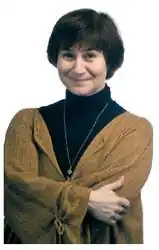
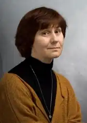

Аромштам Марина Семенівна (нар. 20 березня 1960 року, місто Москва) — російська письменниця, журналіст, педагог, головний редактор сайту www.papmambook.ru. Автор книг про виховання.
Марина Семенівна народилася в Москві 20 березня 1960 року. 1981 року закінчила відділення початкових класів педагогічного факультету Московського державного педагогічного інституту. Упродовж 19 років вона пропрацювала вчителем початкових класів, спочатку під її керівництвом розвивався експериментальний клас. За цей час вона встигла стати кандидатом педагогічних наук і 1997 року отримала почесне місце серед фіналістів Московського конкурсу "Учитель року".
Видаватися і друкуватися Марина Семенівна почала з 1996 року. У скарбничці досягнень є премія ''Срібне перо" за підсумками конкурсу авторів "Учительській газеті". Корисні і пізнавальні статті заслуженого вчителя про проблеми педагогічної реальності публікувалися у багатьох друкованих виданнях. Марина Семенівна впродовж довгих років видає у журналах як : "Моя дитина", "Російська газета", "Селянка", "Учительська газета", "Дошкільна освіта", "Шкільний психолог", "Вогник", Pshychologies. Марина Аромштам удостоїлася поста головного редактора газети "Дошкільна освіта" у 2000 році. З-під її пера вийшло досить багато книг з педагогіки і методики навчання, а в 2007 в журналі "Кукумбер" були опубліковані перші художні твори. Ними стали розповіді з циклу "Волохата дитина". Марина Семенівна так само дуже багато займається громадською діяльністю. Вона була куратором унікальних у своєму роді проектів дошкільних установ і закладів для дітей-сиріт. Брала участь в організації акції допомоги дитячим будинкам "Збери першокласника до школи". Повість письменниці та педагога Марини Аромштам "Коли відпочивають янголи" удостоєна високих літературних відзнак. У Росії, на батьківщині автора, книжка здобула Велику премію Національної дитячої літературної премії "Заповітна мрія", до того ж, перше місце їй присудило саме дитяче журі. А у Європі вона стала однією з "Білих ворон–2011". Книги: "Коли відпочивають янголи", 2011, переклад Іван Андрусяк "Мохнатый ребенок: истории о людях и животных" , 2010 "Кот Ланселот и золотой город. Старая английская история", 2014 "Как дневник. Рассказы учительницы", 2012